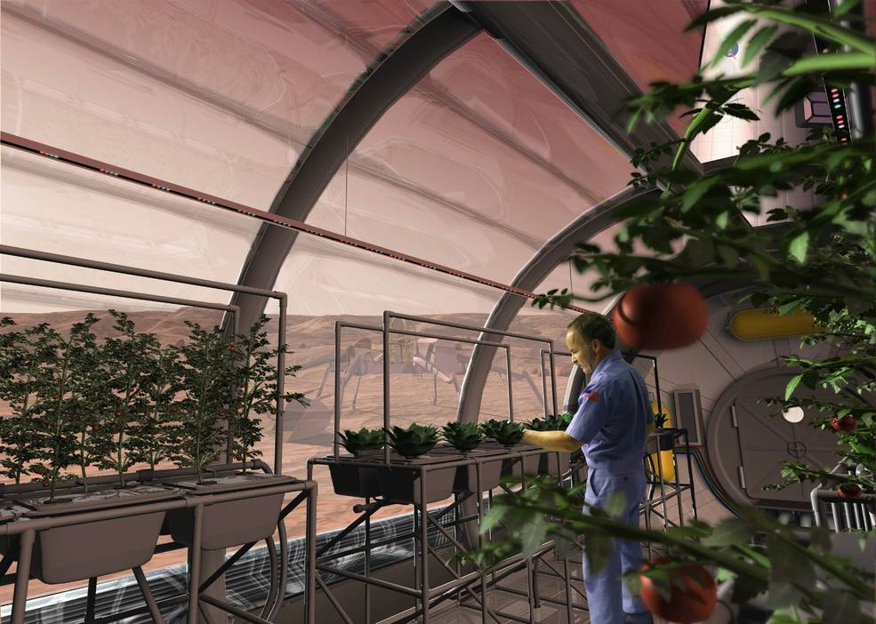
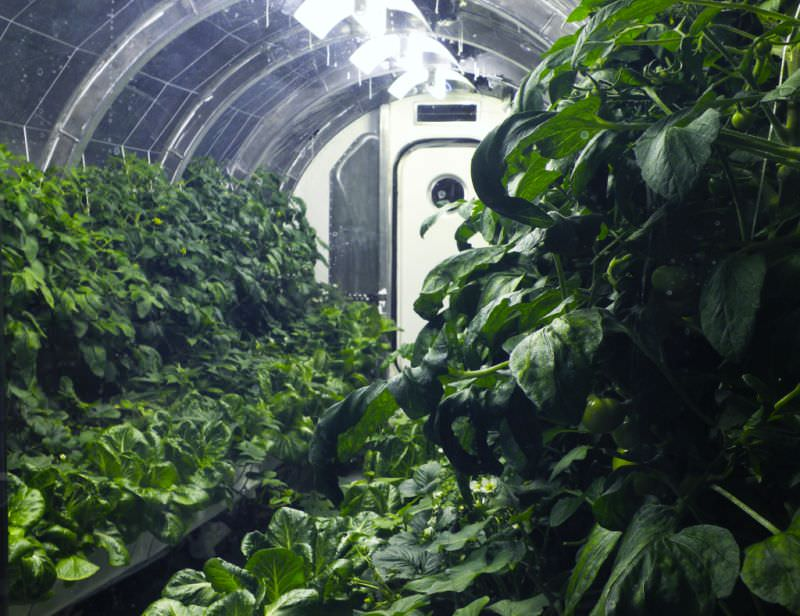
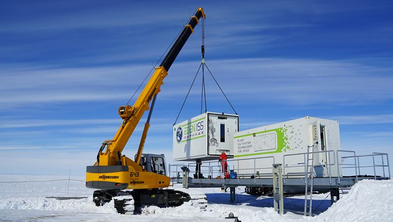

In 2017, Elon Musk laid out his grand sweeping plans for the future of SpaceX, the company that would take humanity to Mars. Over decades, tens of thousands of Starship flights would carry a million human beings to the surface of the Red Planet, the minimum Musk expects it’ll take to create a self-sustaining civilization.
The number of details in an effort like this is mind-boggling. What about the reduced gravity, radiation exposure, and space madness? What about return flights? Replacement parts? Building materials?
What’s everyone going to eat?
Of all the technologies we’ll need to master for anyone to live on Mars, let alone a million human beings, food might actually be one of the biggest challenges.
That’s because Mars brings almost nothing to the table when it comes to growing the vast amount of food that humans require. We don’t think there are any native plants and animals, and Earth can’t keep resupplying a Mars colony forever with care packages from home. That defeats the whole idea of self-sufficient.
Martians are going to need to produce their food locally. And that means harnessing everything at their disposal on the Red Planet, using the latest technology of food production to keep everyone fed.
We’ve always assumed that astronauts working on Mars would feed themselves by growing Earthly crops in simulated Earth conditions. But that requires a lot of energy, space, and materials. It may not be necessary. An artist’s illustration of a greenhouse on Mars. Image Credit: SAIC/strong>
In a new paper published in the Journal New Space called “Feeding One Million People on Mars”, Kevin M Cannon and Daniel T. Britt provide an overview of the technologies that will need to be used for Martian food production, and what their limitations will be.
Obviously you can’t grow plants right on the surface of Mars, the freezing cold and low atmospheric pressure would wipe out a plant before it could even sprout from a seed. There’s no usable organic material in the Martian regolith, and the top layer even contains toxic perchlorates.
The traditional idea is that Martian gardeners will grow their crops in giant greenhouses, starting plants in the regolith with added organic material. You’ve seen the Martian, you know what I’m describing.
The prototype greenhouse is being designed to provide astronauts with a continuous vegetarian diet. Image: University of Arizona.
And it should be relatively straightforward to wash the regolith to remove the perchlorates.
But according to Cannon and Britt, this probably won’t be the case in the beginning. Martian plants won’t touch the regolith. Instead, they’ll be grown hydroponically in nutrient-rich solutions using supplies brought from Earth.
Let me show you a specific example of what this might look like.
One of the most hostile places on Earth to human life is Antartica, but in 2018, scientists at Germany’s Neumayer Station II in Antarctica harvested a huge crop of vegetables that were grown completely hydroponically.
EDEN ISS under construction in Antarctica. Credit: DLR